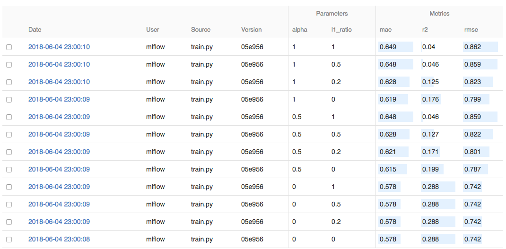
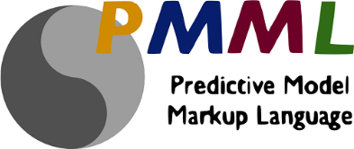
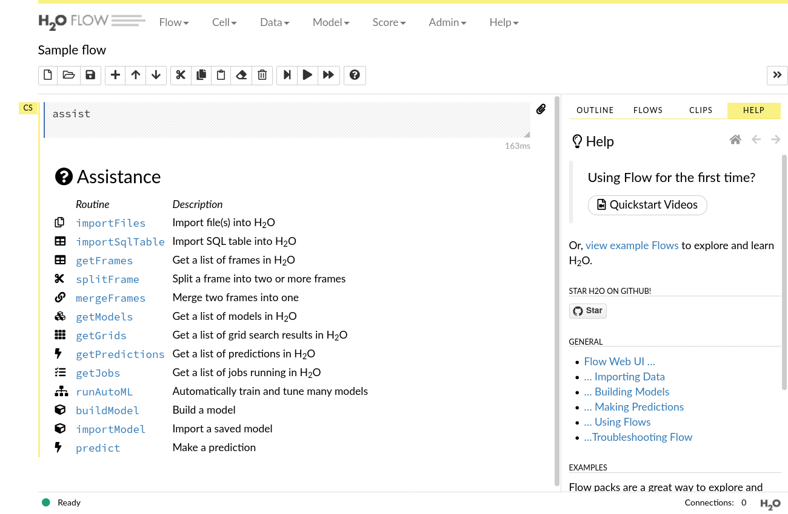
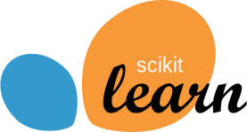
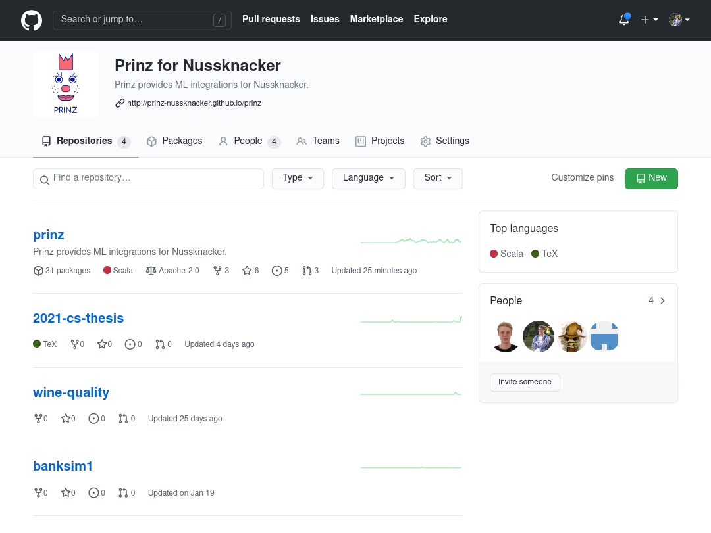
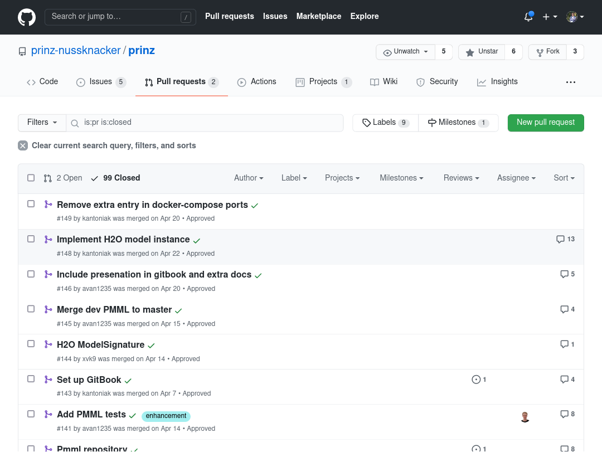
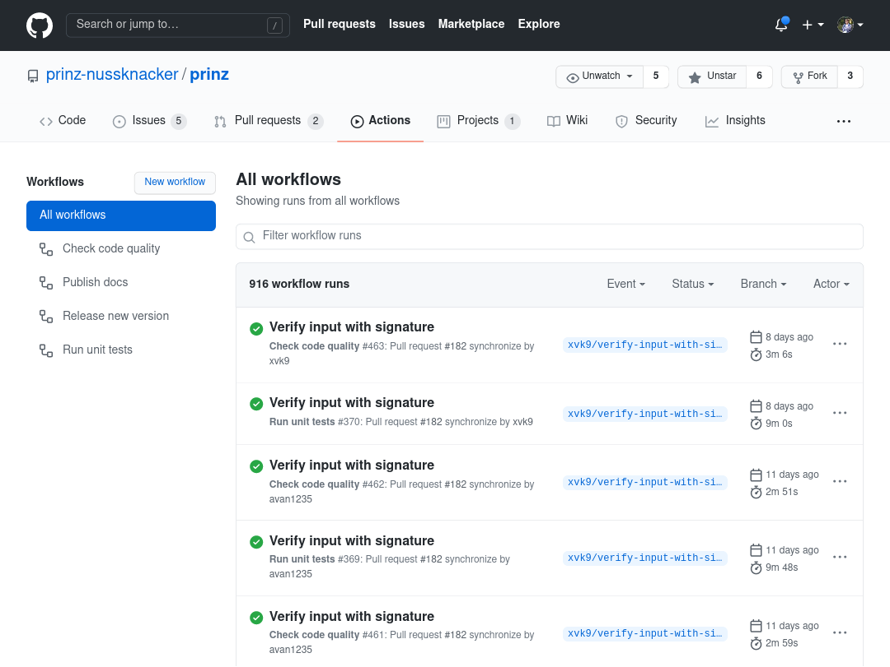
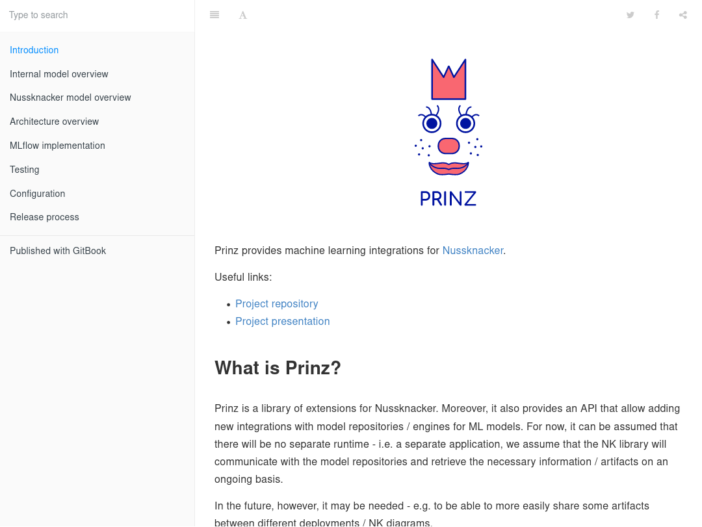

class: center, middle <img src="./images/prinz-logo.svg" style="height: 16em"> # "Integrating Nussknacker with selected Machine Learning tools" --- ## Agenda .left-half[ - Introduction<br /> 1.1 Basic terms<br /> 1.2 Nussknacker & Prinz ] -- .left-half[ - Implementation<br /> 2.1 Prinz API<br /> 2.2 MLflow implementation<br /> 2.3 PMML implementation<br /> 2.4 H2O implementation<br /> 2.5 Prepared examples ] -- .left-half[ - Technical aspects of project<br /> 3.1 Environment for development<br /> 3.2 Project management<br /> 3.3 Final results ] --- class: center, middle # Introduction --- ## Basic terms - Event Stream Processing - definition of ESP - most common use cases - Fraud detection - example categories of fraud - usage of Machine Learning and Event Stream Processing --- ## Nussknacker and Prinz - Nussknacker - Event Stream Processing tool - open-source, developed by TouK - easy to use GUI, intended for non-programmers - main use case - fraud detection - Prinz - library of extensions for Nussknacker - provides integrations with Machine Learning engines/repositories - applications are highly configurable thanks to the Prinz API --- class: center, middle # Prinz API --- ## Overview - main goal of the API - consistent and simple integration process - mandatory traits - ModelSignature with SignatureProvider - Model and ModelInstance - ModelRepository --- ## ModelSignature with SignatureProvider - ModelSignature - defines the input and output format of the model - two lists - one for the input and one for the output - each entry consists of a SignatureName and SignatureType - SignatureProvider - extracts the signature from a model - takes care of the typing --- ## Model, ModelInstance, and ModelRepository - Model - a top-level representation of the model - can be instantiated and prepared for scoring - gives access to the model metadata - ModelInstance - runnable instance of the model - verifies input data and and returns model output - ModelRepository - contains configuration information - lists models for a given integration --- class: center, middle # MLflow integration --- ## Integration overview <img id="mlflow-logo" src="./images/mlflow-logo.svg" alt="MLflow logo" title="MLflow logo" /> - project to manage the complete ML models lifecycle - open-source and open-interface approach to project - well documented library API - high compatibility with multiple existing frameworks - ML models management (with user friendly Web UI) - ML models serving --- ## Models Repository - based on open source scala HTTP client (`sttp`) - implementation of MLflow REST API from scratch - heavy use of Scala `circe` library with `@JsonCodec` approach - parametrized with external configuration  --- ## Model and Model Instance - listed from JSON response from MLflow registry - need of i/o data conversion ## Model Signature - created during training by Data Scientists - available on external storage service (S3 bucket) as YAML file --- class: center, middle # PMML integration --- ## Integration overview  - standard describing format of machine learning models - based on XML - managed by Data Mining Group - Repository Client --- ## PMML Sample file ```xml <PMML xmlns="http://www.dmg.org/PMML-4_1" version="4.1"> <Header copyright="KNIME"> <Application name="KNIME" version="2.8.0"/> </Header> <DataDictionary numberOfFields="10"> <DataField dataType="integer" name="Age" optype="continuous"> <Interval closure="closedClosed" leftMargin="17.0" rightMargin="90.0"/> </DataField> <DataField dataType="string" name="Employment" optype="categorical"> <Value value="Private"/> <Value value="Consultant"/> <Value value="SelfEmp"/> <Value value="PSLocal"/> <Value value="PSState"/> <Value value="PSFederal"/> <Value value="Unemployed"/> <Value value="NA"/> <Value value="Volunteer"/> </DataField> ``` --- ## Repository Client - designed to support multiple types of repositories - currently supporting local FS and HTML-based - allows implementing further types of clients - used also in H2O --- class: center, middle # H2O integration --- class: h2o ## About .left-half[ * Open-source ML platform * Central server with: * Hosted notebooks * Client APIs (R & Python) * Deployment exports * Over 12k customers * H2O.ai, project creator, named Visionary leader in DS & ML (Gartner Quadrant 2021) ] .right-half[ <figure>  <figcaption style="margin-left: 0.5em;">H2O Flow notebook</figcaption> </figure> ] --- class: h2o ## and Prinz * Based on Java libraries * Uses deployment files * MOJO format by H2O.ai * Custom implementation of `ModelRepository` * Needs additional output extraction phase on top of Prinz implementation --- class: center, middle # Project development --- ## Dev environment * Sample implementation with `docker-compose` * All third-party components, Nussknacker and Prinz integrations * Sample `scikit-learn` models for each integration .centered-flex[ <img src="images/final-presentation/docker-logo.svg" style="height: 10rem; padding-right: 5rem;" />  ] --- ## Repository .left-narrow[ * Open-source ] .right-wide[ <figure>  </figure> ] --- ## Repository .left-narrow[ * Open-source * Transparent ] .right-wide[ <figure>  </figure> ] --- ## Repository .left-narrow[ * Open-source * Transparent * Automated ] .right-wide[ <figure>  </figure> ] --- ## Repository .left-narrow[ * Open-source * Transparent * Automated * Documented ] .right-wide[ <figure>  </figure> ] --- class: center, middle # Demo --- class: center, middle <iframe style="width: 37em; height: 20.8125em;" src="https://www.youtube-nocookie.com/embed/dQw4w9WgXcQ" title="YouTube video player" frameborder="0" allow="accelerometer; autoplay; clipboard-write; encrypted-media; gyroscope; picture-in-picture" allowfullscreen></iframe> --- class: center, middle <h2 style="margin-top: 0; margin-bottom: 0.5em;">Thank you!</h2> https://github.com/prinz-nussknacker/prinz